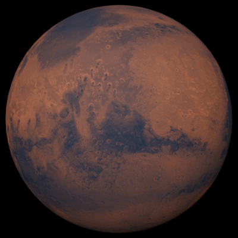

Media Assignment

Mars: Our New Home?

Mars, the fourth planet from the Sun, and many say this planet holds the best opportunity to find past and potentially be our next home. I do beleive in our lifetime we will be sending humans to the moon with the help of SpaceX and Nasa.